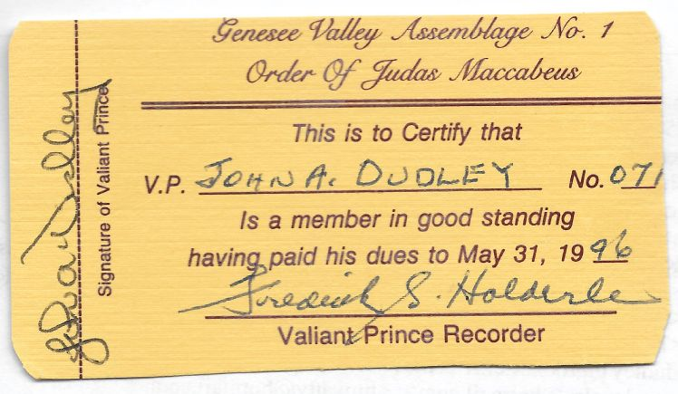
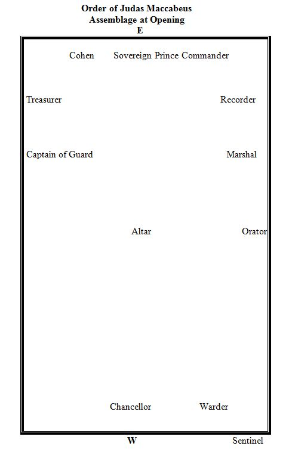

Founder of the Order of Judas Maccabeus, Brother Herman Sarachan:

My latest obsession is one that I've touched on before in the article I shared by R∴W∴ Raymond Beardsley. For those of you that have not yet heard of the Order of Judas Maccabeus, it was an order founded in New York State by a group of brothers seeking a non-Christian alternative to Commandery. The founding of the Order did involve Masons from many aspects of the Craft, including representatives and leaders from the NYS grand bodies of Chapter, Council, and Commandery.
One of my goals has been to reach out to brothers that were involved in the Order. This has proved to be very difficult. Many of the men involved in OoJM have passed away, or don't have an online presence, which makes reaching out a lot more difficult! When I first read the article by Brother Beardsley, I figured that I should try and see if I could contact him. That is when I found out that he had passed away about two weeks before I had found the article. No luck there, unfortunately, and may Brother Beardsley rest easy in the arms of the Creator.
Initially, I thought I had reached a dead end. However, having read the article, I had a jumping-off point: the home Chapter and home Council of the OoJM founder, Brother Herman Sarachan. I sent out emails to the recorder of Doric Council #19 and to the recorder of Hiram Chapter #62. My email to Hiram Chapter was a little bit of a Hail Mary, because I wasn't sure if this was a reformation of Hamilton Chapter, or if it was a different entity entirely. As of yet, I still have to hear back from their recorder, so my assumption is that it is a different Chapter entirely.
However, I was able to hear back from Brother John Dudley, the Recorder of Doric Council (also the Secretary of Northfield Lodge #426). He informed me that he had been a member of the Order and had watched it slowly die. At the time of his joining, he was the 71st member of the Genesee Valley Assemblage #1, which is is shown on the scan of his last dues card for the Order, which he sent to me:
{kind=link}
Brother Dudley then put me in contact with (R∴W∴) Brother John Gallant, who was not a member of the Order, but had been in contact with Brother Beardsley. I emailed Brother Gallant to talk to him and see what I could learn, and ended up with an incredible surprise. Not only did Brother Gallant inform me that there was an Assemblage operating in Texas, he sent me a copy of the Texas ritual! I don't feel comfortable posting/sharing the ritual in such an accessible format, so I will try to describe the document. The "Standard Work" was written by Brother Sarachan in 1974 in New York State, and the Texas ritual's latest revision, according to the document, was in August 2007, by the late Brother Cliff Cameron. Brother Cameron was a Knight of the York Cross of Honor, and the 2007 Grand Historian of the Grand Council of Royal and Select Masters of Texas.
The Order conferred two degrees, the Order of Davidand the Order of Judas Maccabeus. There would have been a third order, the Order of the Temple, but Brother Sarachan died before he could finish it. From what I have been told, my understanding is that there were/are some efforts to finish the Order of the Temple, but I cannot verify this.
The Order of David teaches the lessons of love and devotion through the story of Jonathan and David planning David's escape from King Saul's grasp. The degree opens the VSL to Samuel 1 18:1. The officers of the Order of David are:
- Sovereign Master
- Companion Senior Warden
- Companion Junior Warden
- Companion Captain of the Guard
- Companion Marshall
- Companion Warder
- Companion Sentinel
After the candidate is made a Companion of the Order of David and has observed the drama, the new Companion retires without the Assemblage's room, and the Assemblage resumes labor in the Order of Judas Maccabeus, due to having called down to the Order of David for the purpose of conferral, and the Companion is made a Valiant Prince. The Order of Judas Maccabeus teaches the lessons of fidelity and devotion (to faith) through the story of the Maccabean revolt against the Hellenistic regime of Antiochus IV. The degree opens the VSL to eitherPsalm 23 or Ecclesiastes 12. The officers of the Order of Judas Maccabeus are:
- Sovereign Prince Commander
- Valiant Prince Chancellor
- Valiant Prince Orator
- Valiant Prince Cohen
- Valiant Prince Treasurer
- Valiant Prince Recorder
- Valiant Prince Captain of the Guard
- Valiant Prince Marshall
- Valiant Prince Warder
- Valiant Prince Sentinel
They are seated in the Assemblage room as such:
{kind=link}
There, dear readers, is where I had to go from. My next step was to find out how to contact Brother Cameron, so I reached out to the Grand Recorder of the Grand Council of Texas. I was informed that he had passed away, but that there was a Grand Chapter/Council History and Preservation Committee. I have yet to hear back from either of the emails that I sent to the committee members, unfortunately. I also reached out to the Grand College of Rites, as I am a member ("Fellow"). No dice there, either. Radio silence.
At this point, I think I stalled out for a two weeks, because I was pretty stumped about what to do next. I talked about it with my brothers in lodge, and online, on Reddit, etc, etc, etc. It was then that someone suggested that I email Brother Arturo de Hoyos, who is an expert historian on most anything and everything Masonic. Brother de Hoyos was very friendly and informed me that this was actually an avenue of investigation that one of his associates was pursuing! The running theory is that the group is totally defunct. If so, the rituals will be printed as Collectanea for the Grand College of Rites. I emailed him what I had in terms of general materials, contact information, and so forth. Hopefully something will turn up soon!
In the meanwhile, I am continuing my search. I'm not sure where this will lead me. Honestly, I am really hoping that there's still an active Assemblage somewhere in Texas. All you would need is to to grab five companions of the Royal Arch, and then have them inducted into the Order. That being the required number of Valiant Princes for an Assemblage to form and meet, perhaps there is hope for the future of Judas Maccabeus?